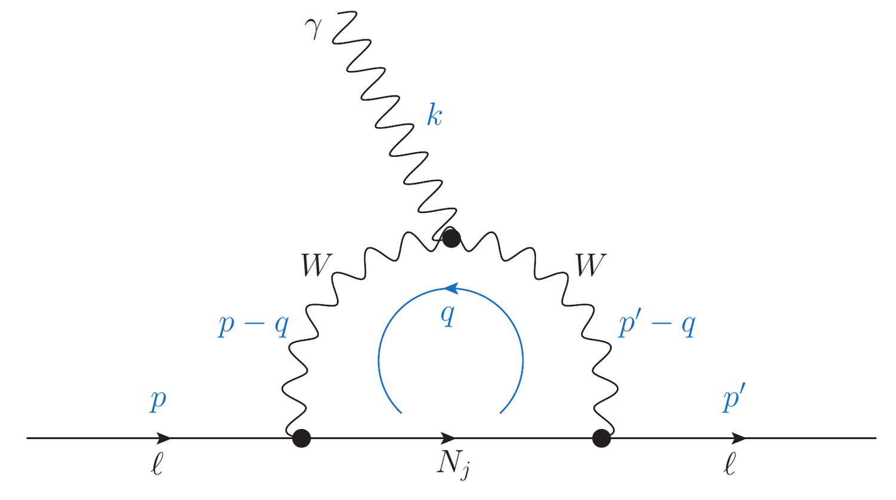

(g−2)e,μ in an extended inverse type-III seesaw model
What it is about
At the time both the electron and muon magnetic moments appeared to deviate from the Standard Model prediction, and in opposite directions. We asked whether a single model could account for both while also generating neutrino masses, and found that an extended inverse type-III seesaw largely can.
